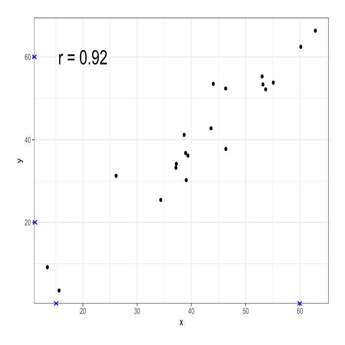

11 Работа статистического детектива
library("tidyverse")11.1 Введение
До сих пор мы лишь использовали разные статистические тесты, чтобы ответить на разные исследовательские вопросы, которые могут возникнуть. Однако часто в статистические выкладки никто не вчитывается и принимает их как данность, надеясь что софт все правильно посчитал. Здесь есть две опасности: во-первых, бывают недобросовестные исследователи; во-вторых, люди часто ошибаются во время применения и представления результатов статистического анализа (и видимо, это случается чаще). Мы рассмотрим несколько методов, которые позволят проверять некоторые простые случаи, что может быть полезно при критическом чтении (например, во время ревью статей ученых и дата журналистов) в случаях, когда к данным нет доступа. Данный раздел вдохнавлен лекцией Кристин Сайнани.
11.2 Возможно ли такое среднее?
Представим себе, что кто-то провел эксперимент с биномиальными данными, например, посчитал количество не в рассказе А. П. Чехова длинной 322 слова “Жизнь прекрасна!” и обнаружил среднее 0.095. Возможно ли это?
Давайте посмотри на все возможные результаты:
tibble(ratio = round(1:322/322, 3)) %>%
ggplot()+
geom_vline(aes(xintercept = ratio), color = "lightblue")+
geom_vline(xintercept = 0.095, color = "red")Так ничего не видно, давайте сконцентрируемся на промежуке от 0.085 до 0.1, в котором лежит завяленное значение 0.095, и добавим подписи:
tibble(ratio = round(1:322/322, 3)) %>%
ggplot()+
geom_vline(aes(xintercept = ratio), color = "lightblue")+
geom_vline(xintercept = 0.095, color = "red")+
geom_label(aes(x = ratio, label = ratio), y = 0.5)+
xlim(0.085, 0.1)Мы видим, что красные линии повторяются регулярно с интервалом 0.03 и что синяя линия явно не вписывается в этот паттерн. Может быть было использовано другое округление?
tibble(ratio = round(1:322/322, 5)) %>%
ggplot()+
geom_vline(aes(xintercept = ratio), color = "lightblue")+
geom_vline(xintercept = 0.095, color = "red")+
geom_label(aes(x = ratio, label = ratio), y = 0.5)+
xlim(0.085, 0.1)Если бы числа округлялись вверх, на месте 0.09317 мы бы увидели 0.094. Если бы числа округлялись вниз, на месте 0.09627 мы бы увидели 0.096. Так что доля не в рассказе длинной 322 никак не может быть 0.095. Может быть автор ошибся с количеством слов?
200:400*0.095 [1] 19.000 19.095 19.190 19.285 19.380 19.475 19.570 19.665 19.760 19.855
[11] 19.950 20.045 20.140 20.235 20.330 20.425 20.520 20.615 20.710 20.805
[21] 20.900 20.995 21.090 21.185 21.280 21.375 21.470 21.565 21.660 21.755
[31] 21.850 21.945 22.040 22.135 22.230 22.325 22.420 22.515 22.610 22.705
[41] 22.800 22.895 22.990 23.085 23.180 23.275 23.370 23.465 23.560 23.655
[51] 23.750 23.845 23.940 24.035 24.130 24.225 24.320 24.415 24.510 24.605
[61] 24.700 24.795 24.890 24.985 25.080 25.175 25.270 25.365 25.460 25.555
[71] 25.650 25.745 25.840 25.935 26.030 26.125 26.220 26.315 26.410 26.505
[81] 26.600 26.695 26.790 26.885 26.980 27.075 27.170 27.265 27.360 27.455
[91] 27.550 27.645 27.740 27.835 27.930 28.025 28.120 28.215 28.310 28.405
[101] 28.500 28.595 28.690 28.785 28.880 28.975 29.070 29.165 29.260 29.355
[111] 29.450 29.545 29.640 29.735 29.830 29.925 30.020 30.115 30.210 30.305
[121] 30.400 30.495 30.590 30.685 30.780 30.875 30.970 31.065 31.160 31.255
[131] 31.350 31.445 31.540 31.635 31.730 31.825 31.920 32.015 32.110 32.205
[141] 32.300 32.395 32.490 32.585 32.680 32.775 32.870 32.965 33.060 33.155
[151] 33.250 33.345 33.440 33.535 33.630 33.725 33.820 33.915 34.010 34.105
[161] 34.200 34.295 34.390 34.485 34.580 34.675 34.770 34.865 34.960 35.055
[171] 35.150 35.245 35.340 35.435 35.530 35.625 35.720 35.815 35.910 36.005
[181] 36.100 36.195 36.290 36.385 36.480 36.575 36.670 36.765 36.860 36.955
[191] 37.050 37.145 37.240 37.335 37.430 37.525 37.620 37.715 37.810 37.905
[201] 38.000Среди полученных числе целые числа есть только в значениях 200 и 400. Так что, если автор и ошибся в количестве слов, то слишком масштабно. Еще автор мог ошибиться и там, и там. Этот процесс можно немного автоматизировать:
round(200:400*0.095) == 200:400*0.095 [1] TRUE FALSE FALSE FALSE FALSE FALSE FALSE FALSE FALSE FALSE FALSE FALSE
[13] FALSE FALSE FALSE FALSE FALSE FALSE FALSE FALSE FALSE FALSE FALSE FALSE
[25] FALSE FALSE FALSE FALSE FALSE FALSE FALSE FALSE FALSE FALSE FALSE FALSE
[37] FALSE FALSE FALSE FALSE FALSE FALSE FALSE FALSE FALSE FALSE FALSE FALSE
[49] FALSE FALSE FALSE FALSE FALSE FALSE FALSE FALSE FALSE FALSE FALSE FALSE
[61] FALSE FALSE FALSE FALSE FALSE FALSE FALSE FALSE FALSE FALSE FALSE FALSE
[73] FALSE FALSE FALSE FALSE FALSE FALSE FALSE FALSE FALSE FALSE FALSE FALSE
[85] FALSE FALSE FALSE FALSE FALSE FALSE FALSE FALSE FALSE FALSE FALSE FALSE
[97] FALSE FALSE FALSE FALSE FALSE FALSE FALSE FALSE FALSE FALSE FALSE FALSE
[109] FALSE FALSE FALSE FALSE FALSE FALSE FALSE FALSE FALSE FALSE FALSE FALSE
[121] FALSE FALSE FALSE FALSE FALSE FALSE FALSE FALSE FALSE FALSE FALSE FALSE
[133] FALSE FALSE FALSE FALSE FALSE FALSE FALSE FALSE FALSE FALSE FALSE FALSE
[145] FALSE FALSE FALSE FALSE FALSE FALSE FALSE FALSE FALSE FALSE FALSE FALSE
[157] FALSE FALSE FALSE FALSE FALSE FALSE FALSE FALSE FALSE FALSE FALSE FALSE
[169] FALSE FALSE FALSE FALSE FALSE FALSE FALSE FALSE FALSE FALSE FALSE FALSE
[181] FALSE FALSE FALSE FALSE FALSE FALSE FALSE FALSE FALSE FALSE FALSE FALSE
[193] FALSE FALSE FALSE FALSE FALSE FALSE FALSE FALSE TRUEЭта идея лежит в основе Granularity-Related Inconsistent Means test (GRIM). Я не нашел его реализации на R, но вот есть он-лайн приложение.
11.3 Пакет statcheck
Пакет statcheck написан для извлечения и проверки результатов статистических тестов, которые приводятся в статьях. Рассмотрим пример двустороннего и одностороннего t-тестов:
t.test(data = mtcars, qsec ~ am)
Welch Two Sample t-test
data: qsec by am
t = 1.2878, df = 25.534, p-value = 0.2093
alternative hypothesis: true difference in means between group 0 and group 1 is not equal to 0
95 percent confidence interval:
-0.4918522 2.1381679
sample estimates:
mean in group 0 mean in group 1
18.18316 17.36000 t.test(data = mtcars, qsec ~ am, alternative = "greater")
Welch Two Sample t-test
data: qsec by am
t = 1.2878, df = 25.534, p-value = 0.1047
alternative hypothesis: true difference in means between group 0 and group 1 is greater than 0
95 percent confidence interval:
-0.2677649 Inf
sample estimates:
mean in group 0 mean in group 1
18.18316 17.36000 Запустим в функцию statcheck() три варианта:
- результат двустороннего теста;
- результат одностороннего теста;
- совсем неправильный результат.
library("statcheck")
s <- statcheck(c("t(25.534) = 1.2878, p = 0.21",
"t(25.534) = 1.2878, p = 0.10",
"t(22.716) = 3.7671, p < 0.01"))
|
| | 0%
|
|======================= | 33%
|
|=============================================== | 67%
|
|======================================================================| 100%sТеперь в переменной s находится датафрейм со следующими переменными:
SourceStatisticdf1df2Test.ComparisonValueReported.ComparisonReported.P.ValueComputedRawErrorDecisionErrorOneTailOneTailedInTxtAPAfactor
Функция statcheck() работает со следующими статистиками: \(t\)-статистика, \(F\)-статистика (мы ее видели в регрессии), коэффициент корреляции, хи-квадрат и \(z\)-score (используется в z-тесте).
В мануале к пакету описаны много дополнительных функций, которые позволяют не копировать текст из статьи, а автоматически извлекать данные для проверки из .pdf или .html.
11.4 Пакет digitize
Иногда нам может случится, что данные представлены визуально:
set.seed(42)
tibble(x = rnorm(20, mean = 40, sd = 10),
y = x + rnorm(20, mean = 0, sd = 5)) %>%
ggplot(aes(x, y))+
geom_point()+
annotate(geom = "text", x = 20, y = 60, label = "r = 0.92", size = 8)Как бы нам проверить корреляцию Пирсона, которая представлена на графике? Для этого мы воспользуемся пакетом digitize (однако аналогичные операции можно сделать и онлайн). На первом шаге нужно определить границы. При помощи функции ReadAndCal() сначала отметьте минимальное значение по оси x, затем максимальное значение по оси х, затем отметьте минимальное значение по оси y, затем максимальное значение по оси y:
library(digitize)
calibration <- ReadAndCal('images/test_correlaton.png')После того, как вы отметите границы появятся синие крестики:

Следующий шаг — это отметить наблюдения. Это делается при помощи функции DigitData() (нажмите на кнопку Finish наверху или клавишу Esc):
data.points <- DigitData(col = 'red')Теперь на графике появились не только синие крестики, но и красные точки:
После этого используйте функцию Calibrate(), чтобы откалибрировать полученные точки:
df <- Calibrate(data.points, calibration,
15, # минимум по оси x
60, # максимум по оси x
20, # минимум по оси y
60) # максимум по оси yДавайте проверим, как точки соотносятся с оригиналом:
df$type <- "obtained"
set.seed(42)
tibble(x = rnorm(20, mean = 40, sd = 10),
y = x + rnorm(20, mean = 0, sd = 5),
type = "original") %>%
bind_rows(df) %>%
ggplot(aes(x, y, color = type))+
geom_point()Результат достаточно близкий, давайте теперь проверим коэффициент корреляции:
cor(df$x, df$y)[1] 0.9522989И вот мы выяснили, что коэффициент корреляции Пирсона на этих данных равен 0.95, что отличается от заявленных 0.92.
У этого метода, конечно, есть очевидные недостатки:
- при большом количестве точек метод становится слишком трудоемким;
- сам процесс тыкания плохо верефицируем, исследователь может случайно ткнуть два раза на одну точку или отметить два раза группу точек, потому что ему показалось, что раньше он эту группу не отмечал;
- даже при маленьком количестве точек мы не можем заметить случаи, когда значения совпадают или слишком похожи. Т. е. в оригинальных данных может быть две точки, а детектив поставит лишь одну;
- если Ваше изображение повернуто, то результаты может получиться неправильный.